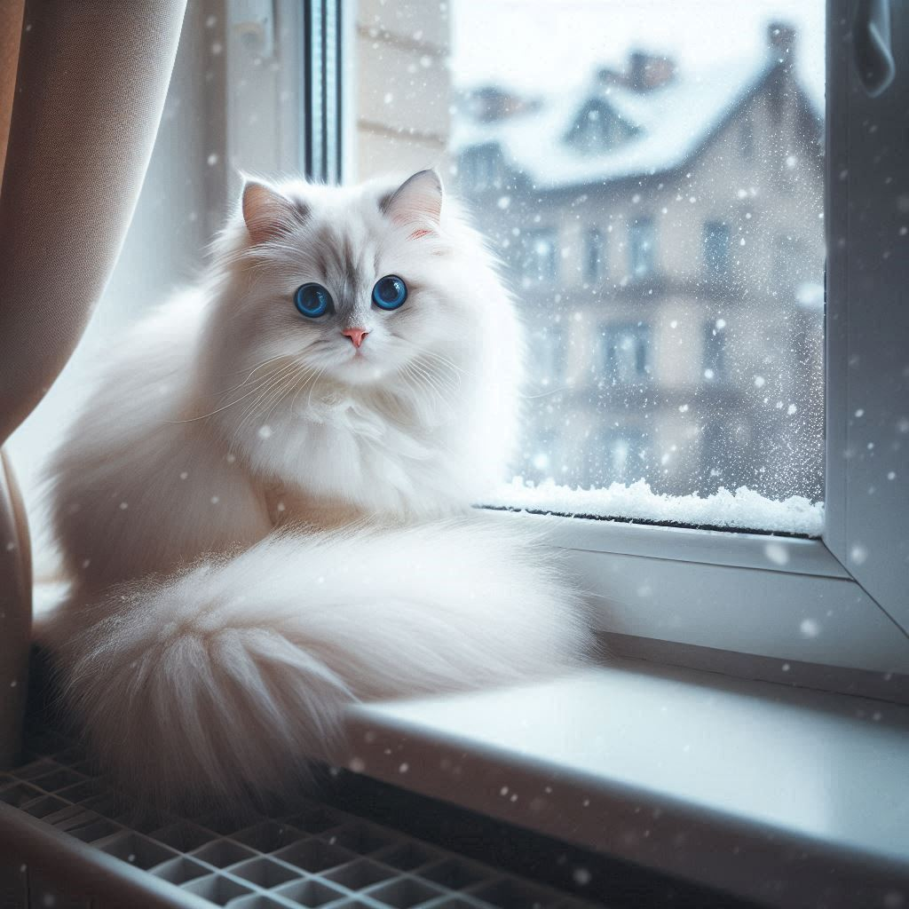
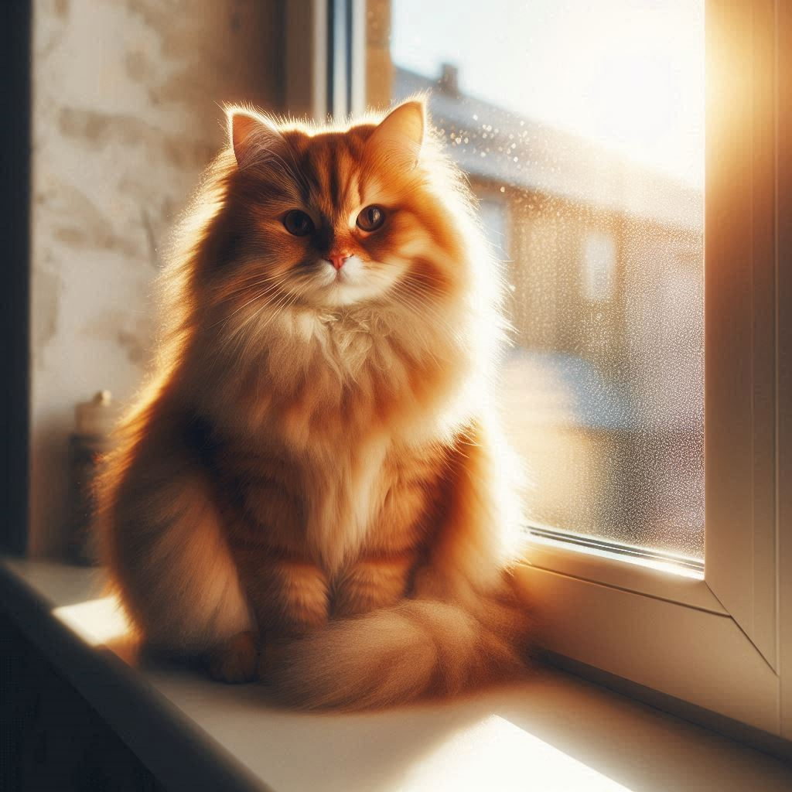
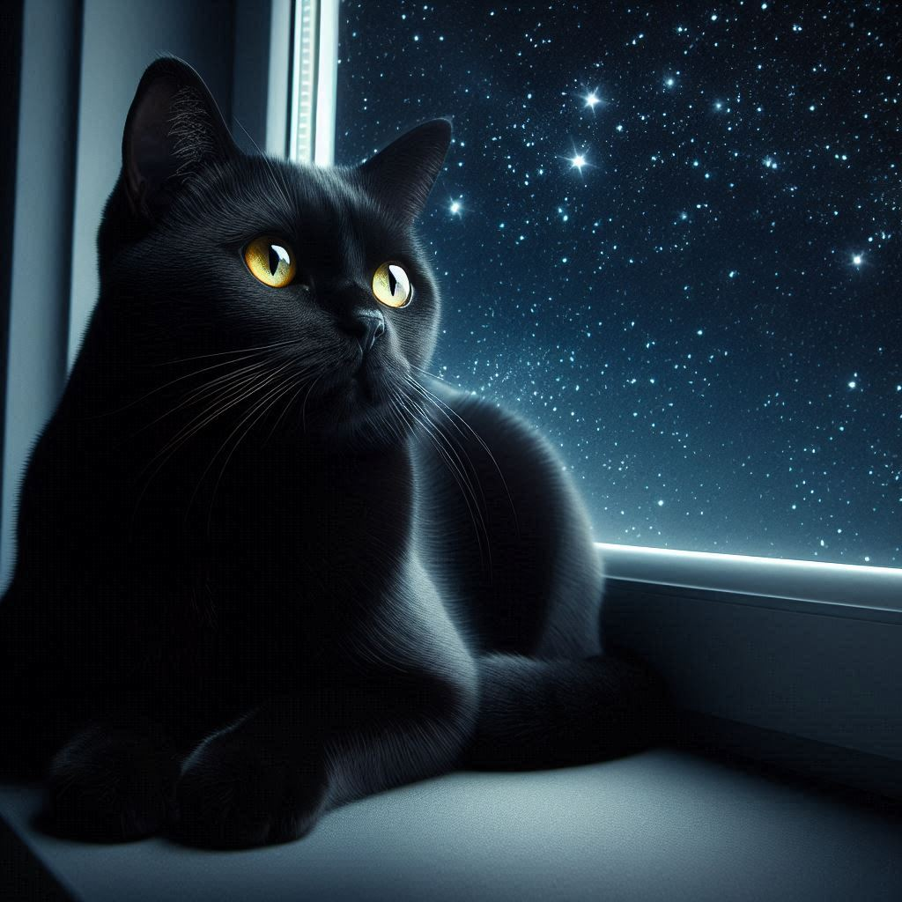
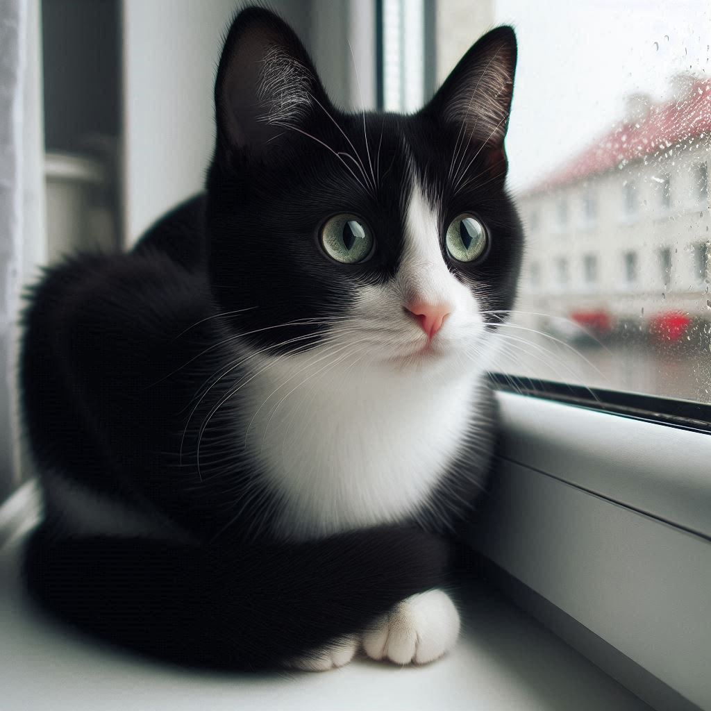

GreenHub
HOME
SOBRE
SEJA VOLUNTÁRIO
CRIE SUA CAMPANHA

Gatinha para Adoção
Nome:
Mia
Idade:
2 anos
Personalidade:
Carinhosa, brincalhona e adora um colo quentinho.
Histórico de Saúde:
Vacinada, castrada e com exames atualizados.
Necessidades Especiais:
Dieta específica devido a alergias.
Adote a Mia

Gatinho para Adoção
Nome:
Leo
Idade:
1 ano
Personalidade:
Curioso, energético e adora brincar com brinquedos.
Histórico de Saúde:
Vacinado, castrado e saudável.
Necessidades Especiais:
Nenhuma necessidade especial.
Adote o Leo

Gatinha para Adoção
Nome:
Luna
Idade:
3 anos
Personalidade:
Calma, amorosa e gosta de ficar em ambientes tranquilos.
Histórico de Saúde:
Vacinada, castrada e com exames atualizados.
Necessidades Especiais:
Necessita de acompanhamento veterinário regular devido a uma condição renal crônica.
Adote a Luna

Gatinho para Adoção
Nome:
Max
Idade:
8 meses
Personalidade:
Aventureiro, sociável e adora explorar novos lugares
Histórico de Saúde:
Vacinado e em boas condições de saúde.
Necessidades Especiais:
Nenhuma necessidade especial.
Adote o Max